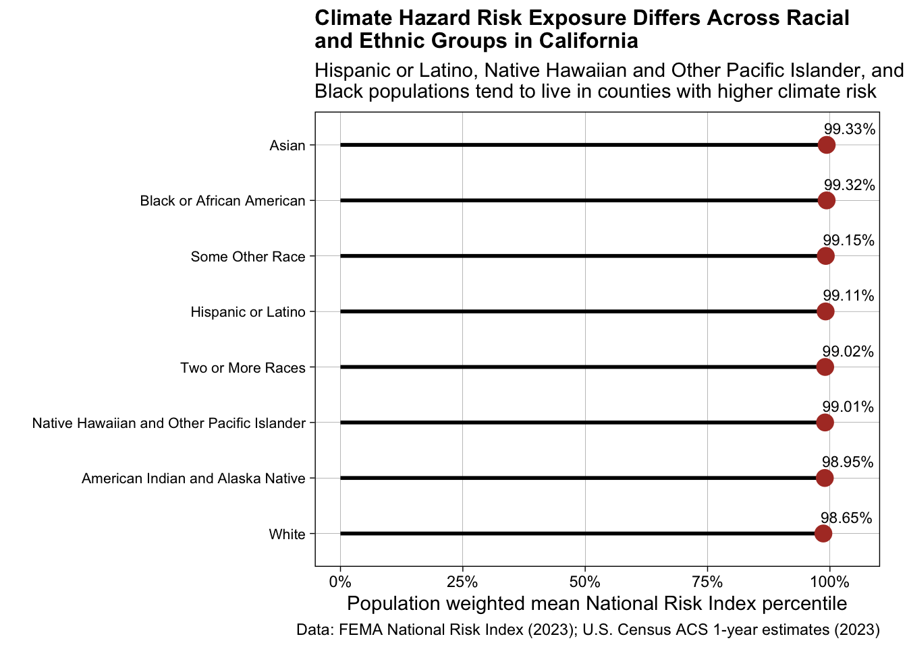

library(tidycensus)
library(tidyverse)
library(gghighlight)
library(scales)
library(janitor)Visualizing FEMA NRI x ACS Data
Climate Hazard Risk Exposure vary across Racial / Ethnic Groups in California
Libraries
Retrieving data from API
Steps 2 and 3 were commented our to not ping the API every single time we rerun this code chunk.
#Step 1a: see all available ACS variables + descriptions
acs_vars <- tidycensus::load_variables(year = 2023,
dataset = "acs1")
#Step 1b: import race & ethnicity data
race_ethnicity <- tidycensus::get_acs(
geography = "county",
survey = "acs1",
# NOTE: you may not end up using all these variables
variables = c("B01003_001", "B02001_002", "B02001_003",
"B02001_004", "B02001_005", "B02001_006",
"B02001_007", "B02001_008", "B03002_012",
"B03002_002"),
state = "CA",
year = 2023) |>
# join variable descriptions (so we know what's what!)
dplyr::left_join(acs_vars, by = dplyr::join_by(variable == name)) %>%
clean_names()
#Step 2: write ACS data to file
#readr::write_csv(race_ethnicity, here::here("data", "ACS-1yr-2023-county-race-ethnicity.csv"))
#Step 3: read in your CSV file
#race_ethnicity <- readr::read_csv(here::here("data", "ACS-1yr-2023-county-race-ethnicity.csv"))
# Load in NRI Data
nri_counties <- read_csv(here::here("data", "National_Risk_Index_Counties_807384124455672111.csv")) %>%
janitor::clean_names()Data Wrangle
acs_long <- race_ethnicity %>%
separate(name, into = c("county_name", "state"), sep = ", ") %>%
mutate(
county_name = str_remove(county_name, " County")) %>%
filter(state == "California") %>%
# keep only race rows
filter(
label %in% c(
"Estimate!!Total",
"Estimate!!Total:!!White alone",
"Estimate!!Total:!!Black or African American alone",
"Estimate!!Total:!!American Indian and Alaska Native alone",
"Estimate!!Total:!!Asian alone",
"Estimate!!Total:!!Native Hawaiian and Other Pacific Islander alone",
"Estimate!!Total:!!Some Other Race alone",
"Estimate!!Total:!!Two or More Races:",
"Estimate!!Total:!!Hispanic or Latino:")) %>%
# create new column
mutate(
race = case_when(
label == "Estimate!!Total" ~ "total_population",
label == "Estimate!!Total:!!White alone" ~ "White",
label == "Estimate!!Total:!!Black or African American alone" ~ "Black or African American",
label == "Estimate!!Total:!!American Indian and Alaska Native alone" ~ "American Indian and Alaska Native",
label == "Estimate!!Total:!!Asian alone" ~ "Asian",
label == "Estimate!!Total:!!Native Hawaiian and Other Pacific Islander alone" ~ "Native Hawaiian and Other Pacific Islander",
label == "Estimate!!Total:!!Some Other Race alone" ~ "Some Other Race",
label == "Estimate!!Total:!!Two or More Races:" ~ "Two or More Races",
label == "Estimate!!Total:!!Hispanic or Latino:" ~ "Hispanic or Latino")) %>%
select(county_name, race, population = estimate)
# Join dataframes
combined <- acs_long %>%
left_join(
nri_counties %>%
filter(state_name_abbreviation == "CA") %>%
select(
county_name,
risk_percentile = national_risk_index_state_percentile_composite),
by = "county_name")Summary of population weighted risk
# Check total number of rows
nrow(combined)[1] 378# group by and summarise
summary_race <- combined %>%
# Exclude Total Population
filter(race != "total_population") %>%
group_by(race) %>%
# Calculate average risk percentile weighted by population
summarise(
weighted_risk = weighted.mean(risk_percentile, population, na.rm = TRUE)) %>%
# Order from smallest to largest
mutate(
race = fct_reorder(race, weighted_risk))
# Check total number of rows
nrow(summary_race)[1] 8# Check values in weighted risk column
unique(summary_race$weighted_risk)[1] 98.95081 99.33406 99.32239 99.11346 99.00757 99.15011 99.02435 98.65409Plot
Inaccurate Plot- The x-axis needs to be scaled from 0-100 to rule out any misleading information.
Updated Plot
#|fig-cap: "Population weighted mean FEMA National Risk Index (NRI) percentiles by race and ethnicity across California counties."
#|fig-alt: "Lollipop plot showing population weighted FEMA National Risk Index (NRI) percentiles by race and ethnicity in California. All racial and ethnic groups show very high risk exposure, with weighted percentiles clustering tightly between 98.7% and 99.3%. Asian, Hispanic or Latino, and Black populations have slightly higher values within this narrow range. Native Hawaiian and Other Pacific Islander, American Indian and Alaska Native, and White populations are still in the upper range, following closely behind."
#|fig-height: 6
#|fig-asp: 0.5
ggplot(summary_race,
aes(x = weighted_risk,
y = fct_reorder(race, weighted_risk))) +
geom_segment(aes(xend = weighted_risk, yend = race),
x = 0,
linewidth = 1,
color = "black") +
geom_point(size = 4, color = "#B03A2E") +
geom_text(aes(label = paste0(round(weighted_risk, 2), "%")),
hjust = 0.05,
vjust = -1.0,
size = 3.0) +
scale_x_continuous(limits = c(0, 105),
labels = scales::percent_format(scale = 1)) +
labs(
title = "Climate Hazard Risk Exposure Differs Across Racial \nand Ethnic Groups in California",
subtitle = "Hispanic or Latino, Native Hawaiian and Other Pacific Islander, and \nBlack populations tend to live in counties with higher climate risk",
x = "Population weighted mean National Risk Index percentile",
caption = "Data: FEMA National Risk Index (2023); U.S. Census ACS 1-year estimates (2023)",
y = "") +
theme_linedraw() +
theme(
plot.title = element_text(face = "bold", size = 12),
axis.text.y = element_text(size = 8),
panel.grid.minor = element_blank(),
plot.margin = margin(5, 15, 5, 5)
)
Questions
- What are your variables of interest and what kinds of data (e.g. numeric, categorical, ordered, etc.) are they (a bullet point list is fine)?
- Race / ethnicity (categorical)
- County (categorical)
- Population counts by race and county (numeric, discrete)
- National Risk Index percentile (numeric, continuous)
- Population weighted mean National Risk Index percentile by race (numeric, continuous)
- How did you decide which type of graphic form was best suited for answering the question? What alternative graphic forms could you have used instead? Why did you settle on this particular graphic form?
- I felt that this type of graph (lollipop) displayed the population weighted risk percentiles better since they’re all clustered near the upper end of the scale, making small differences between groups difficult to see with a standard bar chart. The other plots I tried were boxplot and bar/ column plot, the boxplots were very small. I personally did not like how the barplot, since the variation was not as clear.
- Summarize your main finding in no more than two sentences.
- Asian, Hispanic or Latino, and Black populations experience higher average climate hazard risk exposure across California counties. White, Native Hawaiian and Other Pacific Islander, and American Indian and Alaska Native populations tend to live in counties with slightly lower average risk percentiles.
- What modifications did you make to this visualization to make it more easily readable?
- I calculated a population weighted mean of risk percentiles so that counties with larger populations contribute more to each groups estimated exposure. I reordered racial and ethnic groups by risk level, narrowed the x-axis range to highlight small differences, added a reference line for the overall mean, and applied a simplified theme and custom colors to reduce visual clutter.
- Is there anything you wanted to implement, but didn’t know how? If so, please describe.
- Personally, the plot looks blurry to me (it could be my screen or something) and just make it more clear.